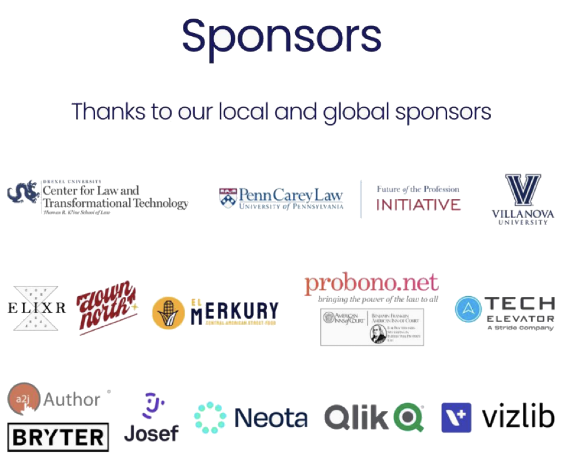

Background
In October of 2022, all the law schools in the Greater Philadelphia area teamed up, along with civic and legal hacker groups, and community legal providers, to host a Social Justice Hackathon. This 36-hour event brought together students, programmers, and other “civic-minded hackers” – to work in collaboration with justice advocates, public servants, community legal providers, and members of the community.
Day 1
The opening night started with a keynote talk from Claudia Johnson of Pro Bono Net. It was followed with 9 project pitches by community partners — ranging from judge performance, to tangled titles, to immigrant resources, and more. Afterwards, participants formed groups around the projects that interested them.
We are so excited to see so many people here at Quorum for our kick off! Currently hearing from Claudia Johnson, our keynote speaker!
— #SJHPHL Philly's First Social Justice Hackathon (@ssjhackathon) October 28, 2022
“I believe that justice is a movement… a movement requires more than just lawyers, it requires everyone” pic.twitter.com/53tnwty0OK
it must be the #zeitgeist this was the #thesis of my #keynote for #SJHPHL our #Justice movement needs more than lawyers. We need those who have been harmed by #systemic inequalities at the decision and design tables to actually create relevant and #safe #techforgood that responds https://t.co/0Q6eQs5KjU
— C.Johnson (@C2AJ) November 1, 2022
“Hope doesn’t lead to action, action leads to hope” Claudia Johnson quotes Cornell West at the #SJHPHL pic.twitter.com/x5Nf02RcHg
— Mitch Palski (@MitchInTheCloud) October 28, 2022
Day 2
The following day, participants met on Drexel’s campus and spent the whole day working on their projects. We were fortunate to have mentors from Community Legal Services, Philadelphia Legal Assistance, and a number of technology sponsors – including Josef, Neota, Qlik, and Unicourt.
Our #APhillyFirst Hackathon is getting intense as teams make the final touches on their projects… with pitches right after lunch, we're in the final stretch now!
— #SJHPHL Philly's First Social Justice Hackathon (@ssjhackathon) October 30, 2022
Happy hacking! #Hackathon #LegalTech pic.twitter.com/zdEcmlxhCS
Yesterday was the BIGGEST day of #SJHPHL with speakers from our partners, work sessions across team and a delicious dinner sponsored by @qlik - provided by El Merkury 😋
— #SJHPHL Philly's First Social Justice Hackathon (@ssjhackathon) October 30, 2022
Looking forward to seeing the presentations today! #LegalHack #TechForJustice pic.twitter.com/hniUFiIQk7
Day 3
On the third day, participants presented their projects. In this post, we’ll review each project, and what they did.
Last but not least, our final team worked on the issue of rental security deposits. The goal being to assert a tenant’s rights through technology! #SJHPHL pic.twitter.com/Nq0exQ0Kbo
— #SJHPHL Philly's First Social Justice Hackathon (@ssjhackathon) October 30, 2022

Projects
Raising the bar (Judge Retention Analysis)
(copied from https://devpost.com/software/judge-retention-analysis-app)
Participants: Jerome Barnes, Brendan Downs, Jamaal Green, Alisha Fagg, Michael Furey, Eric Holloway, Shutian Ma, Aunja Richards, Harshool Rokade, Danielle Scaramella, Brandon Schefstad, Rishabh Sharma, Sri Suderson Thopey Ganesh, Long Tran, Grace Youngblood
In Pennsylvania, we elect our judges. Judge elections are low information and little information is available for voters to make choices. Criminal court judges have 10-year terms in Philadelphia County. Therefore, a decision to retain an elected judge has a long-term impact on our criminal justice system. So what can one do as a concerned citizen to become better informed? Thankfully, court docket data is public data.
Using pre-assembled, de-identified court docket data, this project built a dashboard to shed light on how judges are performing their jobs. This dashboard enables Philadelphia voters to make more informed choices about what judges to vote to retain on our courts.
What did they do?
- The project created the website raiseourbar.com (github repo here)
- Presentation on youtube (00:54:23)
Now we are hearing about “Raising The Bar,” an interactive website to inform voters about elected judges in Philadelphia. They hope voters can use this information to decide which judges to retain. #SJHPHL pic.twitter.com/GQOLBcdsyG
— #SJHPHL Philly's First Social Justice Hackathon (@ssjhackathon) October 30, 2022
Friends in Deed
Participants: Liora Lebowitz, Eric Riese
This project worked on improving the Deed-o-matic, a tool created by Jonathan Pyle for Community Legal Services. The Deed-o-Matic is a guided interview web application, which allows legal service providers to more quickly draft deeds for low-income clients.
This project focused on two improvements to the Deed-o-Matic: automatically reading information from an official deed into the application, and automatically retrieving deeds from public records.
Up second, it’s Liora and Eric with their Deed-o-Matic solution. This could cut the time needed to draft a deed in half! They created “Friend In Deed” an open source API to search the dept of records website #SJHPHL pic.twitter.com/LafLg4nybl
— #SJHPHL Philly's First Social Justice Hackathon (@ssjhackathon) October 30, 2022
CLS Voice Tracker
Participant: Carl Stanton
Background
CLS requested a voice command system for time tracking. Lawyers are required to record time in 6 minute increments for each case they work on. Having to constantly log into the online system breaks their workflow.
What they built
Developed a voice activated system for tracking case time that uses a custom python voice extension for python using the Talon API.
Custom voice commands are used to record timestamps for when work is started and stopped on a case.
- The “start tracking [case]” command records the start time into a database.
- The “stop tracking [case]” command records and end time, and writes the start and stop times into a time_records table.
- If “start tracking” is done for a new case, the existing tracked cases will be ended and moved to the time_records table for future reporting.
The system allows Case numbers to be mapped to names for easier commanding. The next steps would be to build an add-on to log into the legal server website and send the reported time data.
Project Links
The third solution comes from Carl, who created a voice activated system for tracking case time. This project could help CLS track time accurately and help more Philadelphians #SJHPHL pic.twitter.com/OfQbBFocOj
— #SJHPHL Philly's First Social Justice Hackathon (@ssjhackathon) October 30, 2022
New Immigrant Resource Finder
Participants: Susan Daniel, Eric Holloway Sr., Eric Holloway Jr., Michael Rojas Sandoval, Linda Zhang, Mandy Zhang, Julie McIntyre, Kevin Mulcahy
Background
The Newcomer Immigrant Learning Collaborative is a cross-sector collaborative comprising providers in the mental health, medical, education, law, and child welfare systems, who work together to support newcomer immigrant youth and their families.
There are many newly arrived immigrants in Philadelphia who cannot access particular services and benefits due to immigration status. There are organizations in Philadelphia that provide services to immigrant families, across a range of immigration statuses, languages, and neighborhoods. These organizations need a tool that compiles information about their services into one place and provides an interactive, intuitive, and linguistically accessible way to filter relevant resources for the individual seeking assistance.
What they built
This tool guides newly arrived immigrants or service providers who support them through a simple series of questions and leads to a final report with relevant, accessible programs for the newly-arrived immigrant to contact. The tool is interactive and intuitive with translation through Google translate for immigrant community member use.
The solution was built using Neota, a no-code legal platform to store information about organizations and provide a listing of relevant organizations, based on user input.
User input is gathered through a questionnaire, and used by the program to generate the output efficiently and quickly, without storing user input and personal information.
The program uses a three-step validation system consisting of three decision trees to simultaneously validate the input information. In this process of validation, the program checks input information against the criteria in the decision trees to see if any organization in the database meets the requirements. It then generates a report of appropriate services.
The technical inspiration came from existing projects, such as a Neota-based project for legal services in South Carolina, and local Pennsylvania resources, such as Youth Matters Philly and Pasa La Voz.
Project Links
CONGRATS to the Social Justice Hackathon Philadelphia team that created an app that guides immigrants in Philly. The young team (mostly high-schoolers & college freshman!), took a top prize for their well-crafted app built in 1.5 days #SJHPHL #futureoflaw #legaltech #NoCode pic.twitter.com/8aO0shxpzd
— Neota (@NeotaLogic) November 8, 2022
The next ⏭️ team created an immigrant resources guide to help newly arrived immigrants to Philadelphia. This tool was created for The Newcomer Immigrant Youth Learning Collaborative! #SJHPHL pic.twitter.com/H8abcZY75t
— #SJHPHL Philly's First Social Justice Hackathon (@ssjhackathon) October 30, 2022
Restaurant Startup Advisor
Participants: Stanley Griggs, II
Background
Starting a restaurant can be a gateway to financial growth in Philadelphia for many. A small business such as a restaurant can help families new to our area to set down roots in our communities. Unfortunately, starting a restaurant requires navigating a labyrinth of shifting regulations, government agencies that cannot communicate with each other, and much more. This project would benefit new restaurant owners, particularly those starting a restaurant with limited English proficiency, whether written or spoken.
Solution Design
Create an interactive one-stop digital guide to starting a restaurant in Philadelphia with strong support for internationalization and other forms of digital accessibility.
Project Links
Starting a restaurant can be a gateway to financial growth in Philadelphia. Stanley worked with The Merchant Fund and @NeotaLogic to create a guide to help someone start a restaurant in Philly. #SJHPHL pic.twitter.com/LPwdCrZeAO
— #SJHPHL Philly's First Social Justice Hackathon (@ssjhackathon) October 30, 2022
Online Dispute Resolution for Security Deposits
Participants: Javier Martinez and Chris Collins
Background
There is an asymmetry of power in the relation between tenants and landlords during disputes related to security deposits.
What they built
Develop a system that creates an escrow contract that holds the security deposit. In the case of a dispute, a chatbot helps the users reach an agreement or automatically resolve it if it goes past the time-limit.
Project Links
Last but not least, our final team worked on the issue of rental security deposits. The goal being to assert a tenant’s rights through technology! #SJHPHL pic.twitter.com/Nq0exQ0Kbo
— #SJHPHL Philly's First Social Justice Hackathon (@ssjhackathon) October 30, 2022